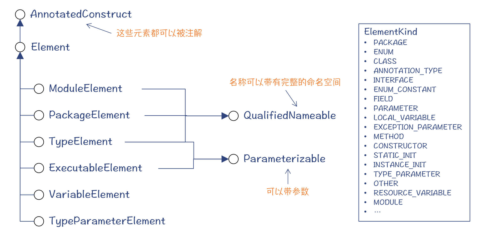
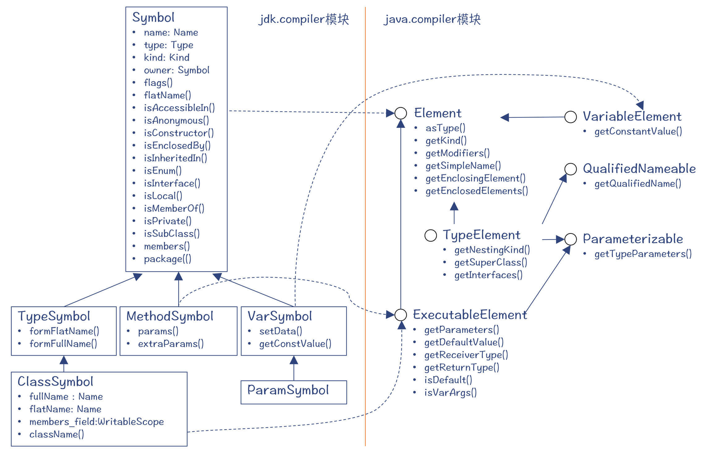
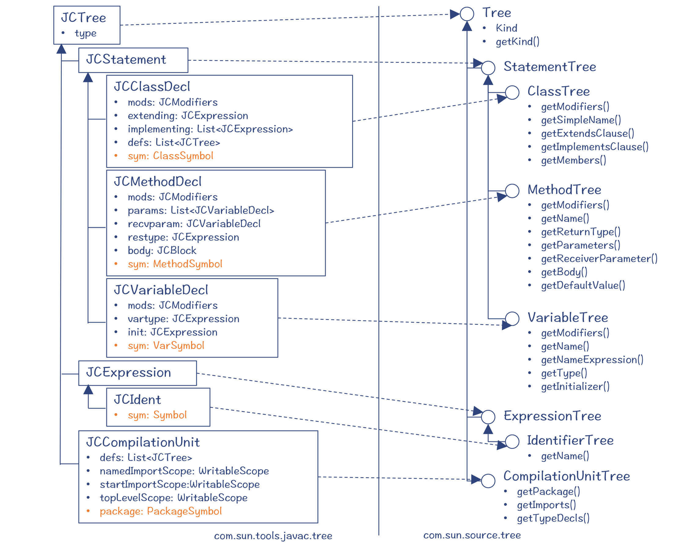
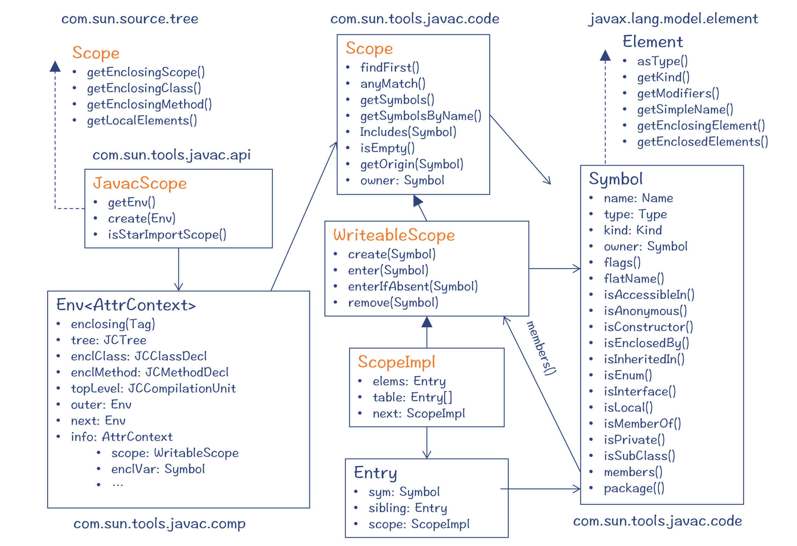
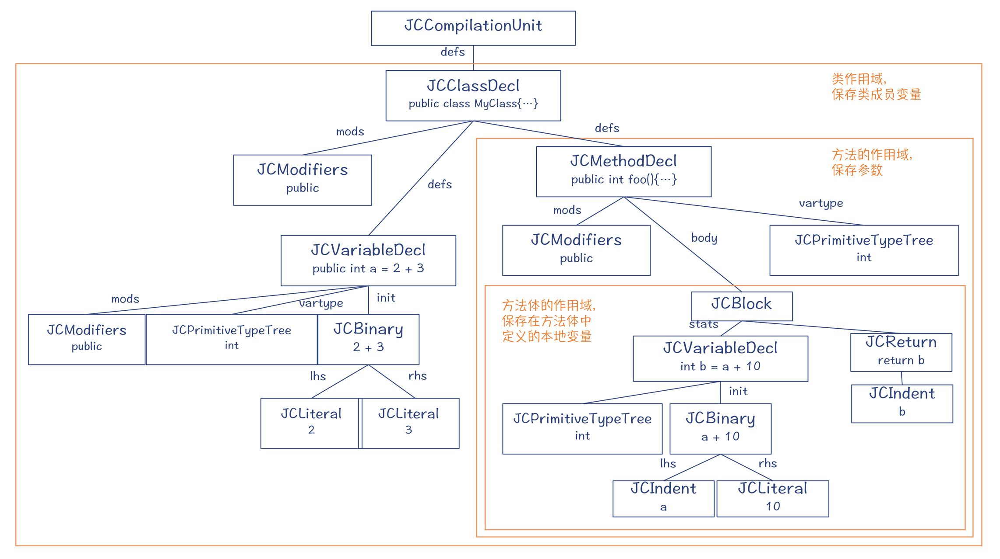
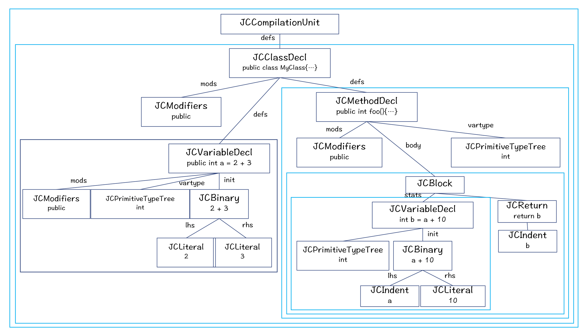
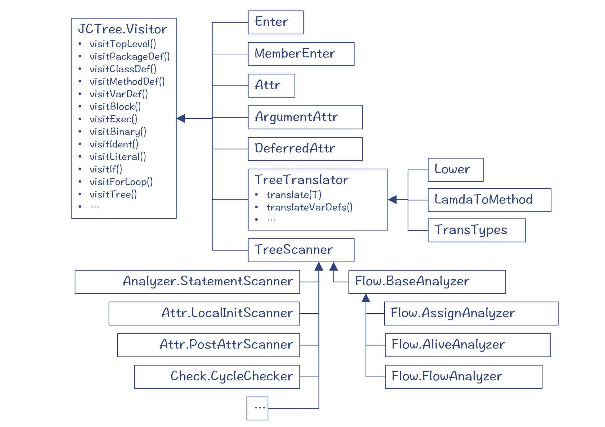
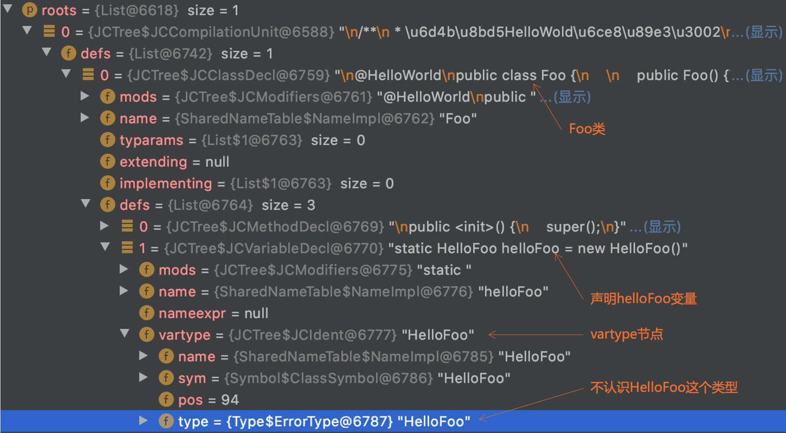
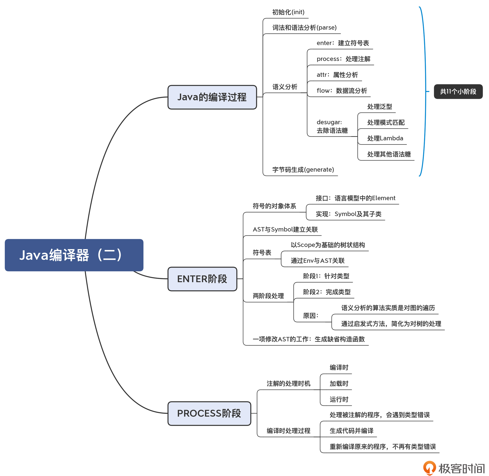
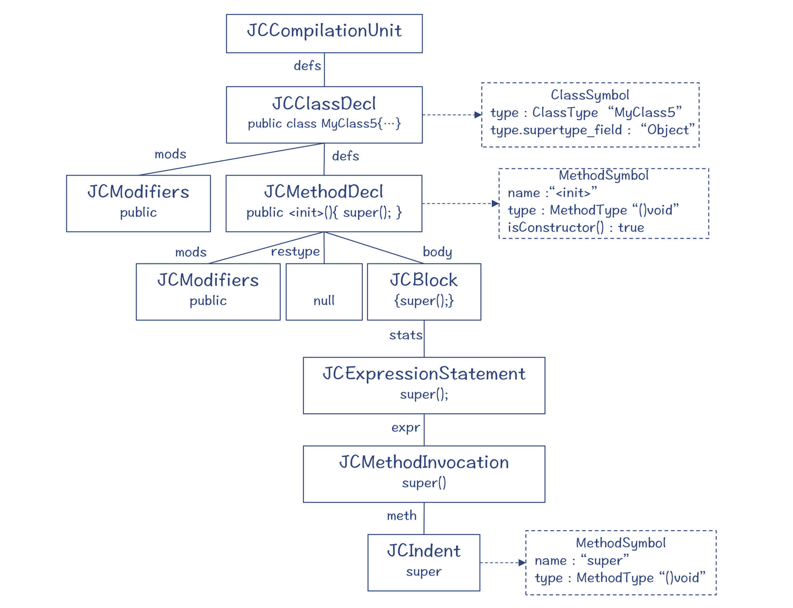

- 00 学习指南 如何学习这门编译原理实战课？.md.html
- 00 开篇词 在真实世界的编译器中游历.md.html
- 01 编译的全过程都悄悄做了哪些事情？.md.html
- 02 词法分析：用两种方式构造有限自动机.md.html
- 03 语法分析：两个基本功和两种算法思路.md.html
- 04 语义分析：让程序符合语义规则.md.html
- 05 运行时机制：程序如何运行，你有发言权.md.html
- 06 中间代码：不是只有一副面孔.md.html
- 07 代码优化：跟编译器做朋友，让你的代码飞起来.md.html
- 08 代码生成：如何实现机器相关的优化？.md.html
- 09 Java编译器（一）：手写的编译器有什么优势？.md.html
- 10 Java编译器（二）：语法分析之后，还要做些什么？.md.html
- 11 Java编译器（三）：属性分析和数据流分析.md.html
- 12 Java编译器（四）：去除语法糖和生成字节码.md.html
- 13 Java JIT编译器（一）：动手修改Graal编译器.md.html
- 14 Java JIT编译器（二）：Sea of Nodes为何如此强大？.md.html
- 15 Java JIT编译器（三）：探究内联和逃逸分析的算法原理.md.html
- 16 Java JIT编译器（四）：Graal的后端是如何工作的？.md.html
- 17 Python编译器（一）：如何用工具生成编译器？.md.html
- 18 Python编译器（二）：从AST到字节码.md.html
- 19 Python编译器（三）：运行时机制.md.html
- 20 JavaScript编译器（一）：V8的解析和编译过程.md.html
- 21 JavaScript编译器（二）：V8的解释器和优化编译器.md.html
- 22 Julia编译器（一）：如何让动态语言性能很高？.md.html
- 23 Julia编译器（二）：如何利用LLVM的优化和后端功能？.md.html
- 24 Go语言编译器：把它当作教科书吧.md.html
- 25 MySQL编译器（一）：解析一条SQL语句的执行过程.md.html
- 26 MySQL编译器（二）：编译技术如何帮你提升数据库性能？.md.html
- 27 课前导读：学习现代语言设计的正确姿势.md.html
- 28 前端总结：语言设计也有人机工程学.md.html
- 29 中端总结：不遗余力地进行代码优化.md.html
- 30 后端总结：充分发挥硬件的能力.md.html
- 31 运行时（一）：从0到语言级的虚拟化.md.html
- 32 运行时（二）：垃圾收集与语言的特性有关吗？.md.html
- 33 并发中的编译技术（一）：如何从语言层面支持线程？.md.html
- 34 并发中的编译技术（二）：如何从语言层面支持协程？.md.html
- 35 并发中的编译技术（三）：Erlang语言厉害在哪里？.md.html
- 36 高级特性（一）：揭秘元编程的实现机制.md.html
- 37 高级特性（二）：揭秘泛型编程的实现机制.md.html
- 38 综合实现（一）：如何实现面向对象编程？.md.html
- 39 综合实现（二）：如何实现函数式编程？.md.html
- 40 成果检验：方舟编译器的优势在哪里？.md.html
- 不定期加餐1 远程办公，需要你我具备什么样的素质？.md.html
- 不定期加餐2 学习技术的过程，其实是训练心理素质的过程.md.html
- 不定期加餐3 这几年，打动我的两本好书.md.html
- 不定期加餐4 从身边的牛人身上，我学到的一些优秀品质.md.html
- 不定期加餐5 借助实例，探究C++编译器的内部机制.md.html
- 划重点 7种编译器的核心概念与算法.md.html
- 期末答疑与总结 再次审视学习编译原理的作用.md.html
- 热点问题答疑 如何吃透7种真实的编译器？.md.html
- 用户故事 易昊：程序员不止有Bug和加班，还有诗和远方.md.html
- 知识地图 一起来复习编译技术核心概念与算法.md.html
- 结束语 实战是唯一标准！.md.html
- 捐赠
10 Java编译器（二）：语法分析之后，还要做些什么？
你好，我是宫文学。
上一讲，我带你了解了Java语言编译器的词法分析和语法分析功能，这两项工作是每个编译器都必须要完成的。那么，根据第1讲我对编译过程的介绍，接下来就应该是语义分析和生成IR了。对于javac编译器来说，生成IR，也就是字节码以后，编译器就完成任务了。也就是说，javac编译器基本上都是在实现一些前端的功能。
不过，由于Java的语法特性很丰富，所以即使只是前端，它的编译功能也不少。那么，除了引用消解和类型检查这两项基础工作之外，你是否知道注解是在什么时候处理的呢？泛型呢？还有各种语法糖呢？
所以，今天这一讲，我就带你把Java编译器的总体编译过程了解一遍。然后，我会把重点放在语义分析中的引用消解、符号表的建立和注解的处理上。当你学完以后，你就能真正理解以下这些问题了：
- 符号表是教科书上提到的一种数据结构，但它在Java编译器里是如何实现的？编译器如何建立符号表？
- 引用消解会涉及到作用域，那么作用域在Java编译器里又是怎么实现的？
- 在编译期是如何通过注解的方式生成新程序的？
为了方便你理解Java编译器内部的一些对象结构，我画了一些类图（如果你不习惯看类图的话，可以参考下面的图表说明，比如我用方框表示一个类，用小圆圈表示一个接口，几种线条分别代表继承关系、引用关系和接口实现）。
图1 ：课程中用到的类图的图表说明
在课程开始之前，我想提醒几点：建议你在一个良好的学习环境进入今天的学习，因为你需要一步步地，仔细地跟住我的脚步，避免在探索过程中迷路；除此之外，你的手边还需要一个电脑，这样随时可以查看我在文章中提到的源代码。
了解整个编译过程
现在，你可以打开jdk.compiler模块中的com.sun.tools.javac.comp包对应的源代码目录。
comp应该是Compile的缩写。这里面有一个com.sun.tools.javac.comp.CompileStates类，它的意思是编译状态。其中有一个枚举类型CompileState，里面列出了所有的编译阶段。
你会看到，词法和语法分析只占了一个环节（PARSE），生成字节码占了一个环节，而剩下的8个环节都可以看作是语义分析工作（建立符号表、处理注解、属性计算、数据流分析、泛型处理、模式匹配处理、Lambda处理和去除其他语法糖）。
public enum CompileState {
INIT(0), //初始化
PARSE(1), //词法和语法分析
ENTER(2), //建立符号表
PROCESS(3), //处理注解
ATTR(4), //属性计算
FLOW(5), //数据流分析
TRANSTYPES(6), //去除语法糖：泛型处理
TRANSPATTERNS(7), //去除语法糖：模式匹配处理
UNLAMBDA(8), //去除语法糖：LAMBDA处理(转换成方法)
LOWER(9), //去除语法糖：内部类、foreach循环、断言等。
GENERATE(10); //生成字节码
...
}
另外，你还可以打开com.sun.tools.javac.main.JavaCompiler的代码，看看它的compile()方法。去掉一些细节，你会发现这样的代码主干，从中能看出编译处理的步骤：
processAnnotations( //3：处理注解
enterTrees(stopIfError(CompileState.PARSE, //2：建立符号表
initModules(stopIfError(CompileState.PARSE,
parseFiles(sourceFileObjects)) //1：词法和语法分析
))
),classnames);
...
case SIMPLE:
generate( //10：生成字节码
desugar( //6~9：去除语法糖
flow( //5：数据流分析
attribute(todo)))); //4：属性计算
其中，PARSE阶段的成果就是生成一个AST，后续的语义分析阶段会基于它做进一步的处理：
- enterTrees()：对应ENTER，这个阶段的主要工作是建立符号表。
- processAnnotations()：对应PROCESS阶段，它的工作是处理注解。
- attribute()：对应ATTR阶段，这个阶段是做属性计算，我会在下一讲中给你做详细的介绍。
- flow()：对应FLOW阶段，主要是做数据流分析。我在第7讲中就提到过数据流分析，那时候是用它来做代码优化。那么，难道在前端也需要做数据流分析吗？它会起到什么作用？这些问题的答案我也会在下一讲中为你揭晓。
- desugar()：去除语法糖，其实这里包括了TRANSTYPES（处理泛型）、TRANSPATTERNS（处理模式匹配）、UNLAMBDA（处理Lambda）和LOWER（处理其他所有的语法糖，比如内部类、foreach循环等）四个阶段，我会在第12讲给你介绍。
- generate()：生成字节码，对应了GENERATE阶段，这部分内容我也会在第12讲详细介绍。
在今天这一讲，我会给你介绍前两个阶段的工作：建立符号表和处理注解。
首先，我们来看看Enter阶段，也就是建立符号表的过程。
ENTER阶段：建立符号表
Enter阶段的主要代码在com.sun.tools.javac.comp.Enter类中。在这个阶段，会把程序中的各种符号加到符号表中。
建立符号表
在第5讲中，我已经介绍了符号表的概念。符号表是一种数据结构，它保存了程序中所有的定义信息，也就是你定义的每个标识符，不管是变量、类型，还是方法、参数，在符号表里都有一个条目。
那么，我们再深入看一下，什么是符号。
其实，符号代表了一门语言的基础构成元素。在java.compiler模块中定义了Java语言的构成元素（Element），包括模块、包、类型、可执行元素、变量元素等。这其中的每个元素，都是一种符号。

图2：Java语言的基本构成元素
而在jdk.compiler模块中，定义了这些元素的具体实现，也就是Symbol，符号。

图3：Symbol及其子类
符号里记录了一些重要的属性信息，比如名称（name）、类型（type）、分类（kind）、所有者（owner）等，还有一些标记位，标志该符号是否是接口、是否是本地的、是否是私有的，等等，这些信息在语义分析和后续编译阶段都会使用。另外，不同的符号还有一些不同的属性信息，比如变量符号，会记录其常数值（constValue），这在常数折叠优化时会用到。
那么，Enter过程是怎样发生的呢？你可以看一下com.sun.tools.javac.comp.MemberEnter类中的 visitVarDef()方法。
实际上，当看到一个方法使用visit开头的时候，你应该马上意识到，这个方法是被用于一个Visitor模式的调用中。也就是说，Enter过程是一个对AST的遍历过程，遍历的时候，会依次调用相应的visit方法。visitVarDef()是用于处理变量声明的。
我们还以MyClass的编译为例来探索一下。MyClass有一个成员变量a，在Enter阶段，编译器就会为a建立符号。
我们来看看它的创建过程：
public class MyClass {
public int a = 2+3;
public int foo(){
int b = a + 10;
return b;
}
}
我从visitVarDef()中挑出了最重要的三行代码，需要你着重关注。
...
//创建Symbol
VarSymbol v = new VarSymbol(0, tree.name, vartype, enclScope.owner);
...
tree.sym = v; //关联到AST节点
...
enclScope.enter(v); //添加到Scope中
...
第一行，是创建Symbol。
第二行，是把Symbol关联到对应的AST节点（这里是变量声明的节点JCVaraibleDecl）。
你可以看一下各个AST节点的定义，其中的类、方法、变量声明、编译单元，以及标识符，都带有一个sym成员变量，用来关联到一个符号。这样后续在遍历树的时候，你就很容易查到这个节点对应的Symbol了。
不过你要注意，各种声明节点（类声明、方法声明等）对应的符号，是符号的定义。而标识符对应的Symbol，是对符号的引用。找到每个标识符对应的定义，就是语义分析中的一项重要工作：引用消解。不过，引用消解不是在Enter阶段完成的，而是在ATTR阶段。
你在跟踪编译器运行的时候，可以在JCClassDecl等AST节点的sym变量上打个中断标记，这样你就会知道sym是什么时候被赋值的，从而也就了解了整个调用栈，这样会比较省事。
延伸一句：当你调试一个大的系统时，选择好恰当的断点很重要，会让你事半功倍。

图4：一些重要的AST节点的属性和方法，其中多个AST节点中都有对Symbol的引用
最后来看一下第三行代码，这行代码是把Symbol添加到Scope中。
什么是Scope？Scope就是作用域。也就是说，在Enter过程中，作用域也被识别了出来，每个符号都是保存在相应的作用域中的。
在第4讲，我们曾经说过，符号表可以采用与作用域同构的带层次的表格。Java编译器就是这么实现的。符号被直接保存进了它所在的词法作用域。
在具体实现上，Java的作用域所涉及的类比较多，我给你整理了一个类图，你可以参考一下：

图5：与Scope有关的类
其中有几个关键的类和接口，需要给你介绍一下。
首先是com.sun.tools.javac.code.Scope$ScopeImpl类：这是真正用来存放Symbol的容器类。通过next属性来指向上一级作用域，形成嵌套的树状结构。

图6：AST中的作用域
但是，在处理AST时，如何找到当前的作用域呢？这就需要一个辅助类：Env< AttrContext>。Env的意思是环境，用来保存编译过程中的一些上下文信息，其中就有当前节点所处的作用域（Env.info.scope）。下图展示的是在编译过程中，所使用的Env的情况，这些Env也构成了一个树状结构。

图7：Env< AttrContext>构成的树状结构
然后是com.sun.source.tree.Scope接口：这是对作用域的一个抽象，可以获取当前作用域中的元素、上一级作用域、上一级方法以及上一级类。
好了，这就是与符号表有关的数据结构，后续的很多处理工作都要借助这个数据结构。比如，你可以思考一下，如何基于作用域来做引用消解？在下一讲，我会给你揭晓这个问题的答案。
两阶段的处理过程
前面讨论的是符号表的数据结构，以及建立符号表的大致过程。接下来，我们继续深究一下建立符号表算法的一个重要特点：Enter过程是分两个阶段完成的。
你可以打开Enter类，看看Enter类的头注释，里面对这两个阶段做了说明。
- 第一个阶段：只是扫描所有的类（包括内部类），建立类的符号，并添加到作用域中。但是每个类定义的细节并没有确定，包括类所实现的接口、它的父类，以及所使用的类型参数。类的内部细节也没有去扫描，包括其成员变量、方法，以及方法的内部实现。
- 第二个阶段：确定一个类所缺失的所有细节信息，并加入到符号表中。
这两个阶段，第一个阶段做整个程序的扫描，把所有的类都识别出来。而第二个阶段是在需要的时候才进行处理的。
这里的问题是：为什么需要两个阶段？只用一个阶段不可以吗？
我借一个例子给你解释一下原因。你看看下面这段示例代码，在Enter过程中，编译器遍历了MyClass1的AST节点（JCClassDecl），并建立了一个ClassSymbol。但在遍历到它的成员变量a的时候，会发现它不认识a的类型MyClass2，因为MyClass2的声明是在后面的。
public class MyClass1{
MyClass2 a;
}
class MyClass2{
}
怎么办呢？我们只好分成两个阶段去完成扫描。在第一个阶段，我们为MyClass1和MyClass2都建立符号，并且都放到符号表中；第二阶段，我们再去进一步扫描MyClass1的内部成员的时候，就能为成员变量a标注正确的类型，也就是MyClass2。
我在第4讲中说过，语义分析的特点是上下文相关的。通过对比，你会发现，处理上下文相关情况和上下文无关情况的算法，它们是不一样的。
语法解析算法处理的是上下文无关的情况，因此无论自顶向下还是自底向上，整个算法其实是线性执行的，它会不断地消化掉Token，最后产生AST。对于上下文相关的情况，算法就要复杂一些。对AST各个节点的处理，会出现相互依赖的情况，并且经常会出现环形依赖，因为两个类互相引用在Java语言里是很常见的。加上这些依赖关系以后，AST就变成了一张图。
而语义分析算法，实质上就是对图的遍历算法。我们知道，图的遍历算法的复杂度是比较高的。编译器一般要采用一定的启发式（Heuristic）的算法，人为地找出代价较低的遍历方式。Java编译器里也采用了启发式的算法，我们尽量把对图的遍历简化为对树的遍历，这样工作起来就会简单得多。
对AST的遍历采用了Visitor模式。下图中我列出了一些采用Visitor模式对AST进行处理的程序。Enter程序是其中的一个。

图8：对AST进行处理的Visitor模式的部分程序
所以，语义分析就是由各种对AST进行遍历的算法构成的。在跟踪Java编译器执行的过程中，你还会发现多个处理阶段之间经常发生交错。比如，对于方法体中声明的局部变量，它的符号不是在ENTER阶段创建的，而是在ATTR阶段又回过头来调用了与建立符号表有关的方法。你可以先想想这又是什么道理。这里留下一个伏笔，我会在下一讲中给你解答。
系统符号表
前面说的符号表，保存了用户编写的程序中的符号。可是，还有一些符号，是系统级的，可以在不同的程序之间共享，比如原始数据类型、java.lang.Object和java.lang.String等基础对象、缺省的模块名称、顶层的包名称等。
Java编译器在Symtab类中保存这些系统级的符号。系统符号表在编译的早期就被初始化好，并用于后面的编译过程中。
以上就是ENTER阶段的所有内容。接着，编译器就会进入下一个阶段：PROCESS阶段，也就是处理注解。
PROCESS阶段：处理注解
注解是Java语言中的一个重要特性，它是Java元编程能力的一个重要组成部分。所谓元编程，简单地说，就是用程序生成或修改程序的能力。
Java的注解需要在编译期被解析出来。在Java编译器中，注解被看作是符号的元数据，所以你可以看一下SymbolMetadata类，它记录了附加在某个符号上的各种注解信息。
然后呢，编译器可以在三个时机使用这些注解：一是在编译时，二是在类加载时，三是在类运行时。
对于后两者，编译器需要做的工作比较简单，把注解内容解析出来，放到class文件中。这样的话，PROCESS阶段不需要做什么额外的工作。
而有些注解是要在编译期就处理的，这些注解最后就没必要保存到class文件。因为它们的使命在编译阶段就完成了。
那在编译阶段会利用注解做什么呢？最主要的用法，是根据注解动态生成程序，并且也被编译器编译。在后面探索Java的JIT编译器时，你会看到采用这种思路来生成程序的实例。你可以用简单的注解，就让注解处理程序生成很长的、充满“刻板代码”的程序。
我写了一个非常简单的示例程序，来测试Java编译器处理注解的功能。该注解叫做HelloWorld：
@Retention(RetentionPolicy.SOURCE) //注解用于编译期处理
@Target(ElementType.TYPE) //注解是针对类型的
public @interface HelloWorld {
}
针对这个注解，需要写一个注解处理程序。当编译器在处理该注解的时候，就会调用相应的注解处理程序。你可以看一下HelloWorldProcessor.java程序。它里面的主要逻辑是获取被注解的类的名称，比如说叫Foo，然后生成一个HelloFoo.java的程序。这个程序里有一个sayHello()方法，能够打印出“Hello Foo”。如果被注解的类是Bar，那就生成一个HelloBar.java，并且打印“Hello Bar”。
我们看一下Foo的代码。你注意，这里面有一个很有意思的现象：在Foo里调用了HelloFoo，但HelloFoo其实当前并没有生成！
@HelloWorld
public class Foo {
//HelloFoo类是处理完注解后才生成的。
static HelloFoo helloFoo = new HelloFoo();
public static void main(String args[]){
helloFoo.sayHello();
}
}
你可以在命令行编译这三个程序。其中编译Foo的时候，要用-processor选项指定所采用的注解处理器。
javac HelloWorld.java
javac HelloWorldProcessor.java
javac -processor HelloWorldProcessor Foo.java
在这个编译过程中，你会发现当前目录下生成了HelloFoo.java文件，并且在编译Foo.java之前就被编译了，这样在Foo里才能调用HelloFoo的方法。
你可以在IDE里跟踪一下编译器对注解的处理过程。借此，你也可以注意一下编译器是如何管理编译顺序的，因为HelloFoo一定要在Foo之前被编译。
扩展：Debug对注解的处理过程需要有一定的技巧，请参考我为你整理的配置指南。
你会发现，在Enter之后，声明helloFoo这个成员变量的语句的vartype节点的类型是ErrorType，证明这个时候编译器是没有找到HelloFoo的定义的。

图9：在处理注解之前，还没有生成HelloFoo
不过，在编译器处理完毕注解以后，HelloFoo就会被生成，Foo类的ENTER过程还会重走一遍，这个时候相关类型信息就正确了。
课程小结
好了，本讲我们首先对Java的编译过程做了一个顶层的介绍，然后分析了ENTER和PROCESS阶段所做的工作。希望你能有以下收获：
- 对前端编译过程可以有更加细致的了解，特别是对语义分析阶段，会划分成多个小阶段。由于语法分析的本质是对图做处理，所以实际执行过程不是简单地逐个阶段顺序执行，而是经常交织在一起，特别是ENTER阶段和ATTR阶段经常互相交错。
- ENTER阶段建立了符号表这样一个重要的数据结构。我们现在知道Java的符号表是按照作用域的结构建立的，而AST的每个节点都会对应某个作用域。
- PROCESSOR阶段完成了对注解的处理。你可以在代码里引用将要生成的类，做完注解处理后，这些类会被生成并编译，从而使得原来的程序能够找到正确的符号，不会报编译错误。
在最后，为了帮你将今天的内容做一个梳理，我提供一张思维导图，供你参考，整理知识：

一课一思
在Java语言中，对于下面的示例代码，会产生几个作用域，你觉得它们分别是什么？
public class ScopeTest{
public int foo(int a){
if(a>0){
//一些代码
}
else{
//另一些代码
}
}
}
欢迎在留言区分享你的答案，如果觉得有收获，也欢迎你把今天的内容分享给更多的朋友。
参考资料
关于注解的官方教程，你可以参考这个链接。
扩展知识
Java编译器的功能很多。如果你有精力，还可以探索一些有趣的细节功能，比如：你知道Java在编译阶段，会自动生成缺省的构造函数吗？
ENTER的第二个阶段任务是由TypeEnter类来完成的，你可以查看一下这个类的说明。它内部划分成了4个小的阶段，每个阶段完成一个更小一点的任务。其中的MemberPhase阶段，会把类的成员都建立符号，但MemberPhase还会做一件有趣的事情，就是生成缺省的构造函数。
为什么说这个细节很有趣呢？因为这是你第一次遇到在语义分析的过程中，还要对AST做修改。下面我们看看这个过程。
首先，你需要重新回顾一下缺省构造函数的意思。
在编写Java程序时，你可以不用写构造函数。对于下面这个MyClass5类，我们没有写构造函数，也能正常地实例化：
public class MyClass5{
}
但在语义分析阶段，实际上编译器会修改AST，插入一个缺省构造函数（相当于下面的代码）。缺省的构造函数不带参数，并且调用父类的一个不带参数构造方法（对于MyClass5类来说，父类是java.lang.Object类，“super()”引用的就是Object类的不带参数的构造方法）。
public class MyClass3{
public MyClass3(){
super();
}
}
对应的AST如下，其中JCMethodDecl这棵子树，就是语义分析程序插入的。

图10：生成缺省构造函数之后的AST，以及关联的Symbol
新插入的构造方法是以JCMethodDecl为根节点的一棵子树。对于这个JCMethodDecl节点，在属性标注做完以后，形成了下面的属性。
- 名称：
<init>。 - 类型：()void，也就是没有参数，返回值为void。
- 符号：生成了一个方法型的符号（sym属性），它的名称是
<init>，如果调用sym.isConstructor()方法，返回true，也就是说，这个符号是一个构造方法。
在这个缺省构造方法里，调用了“super();”这样一个语句，让父类有机会去做初始化工作，进而也让父类的父类有机会去做初始化工作，依次类推。
“super()”语句的叶子节点是一个JCIndent节点，也就是标识符。这个标识符的名称是”super“，而符号（sym属性），则通过变量引用消解，指向了Object类的构造方法。
最后，我们声明MyClass5类的时候，也并没有声明它继承自Object。这个信息也是自动推断出来的，并且会在类节点（JCClassDecl）的type属性中标注清楚。在图中你可以看到，type.supertype_field指向了Object这个类型。
除了在自动生成的缺省构造函数里会调用super()，你还知道，当我们手写一个构造函数的时候，也可以在第一句里调用父类的一个构造方法（并且必须是在第一句）。
public class MyClass4 extends MyClass3{
public MyClass4(int a){
super(a); //这句可以省略，编译器可以自动生成
...
}
}
如果你不显式地调用super()，编译器也会自动加入这样的一个调用，并生成相应的AST。这个时候，父类和子类的构造方法的参数也必须一致。也就是说，如果子类的构造方法的签名是（int, String），那么父类也必须具备相同签名的一个构造方法，否则没有办法自动生成对父类构造方法的调用语句，编译器就会报错。我相信你很可能在编程时遇到过这种编译信息，不过现在你应该就能清晰地了解，为什么编译器会报这些类型的编译错误了。
总体来说，Java的编译器会根据需要加入一些AST节点，实现一些缺省的功能。其中包括缺省的构造方法、对父类构造方法的缺省调用，以及缺省的父类（Object）。
© 2019 - 2023 Liangliang Lee. Powered by gin and hexo-theme-book.